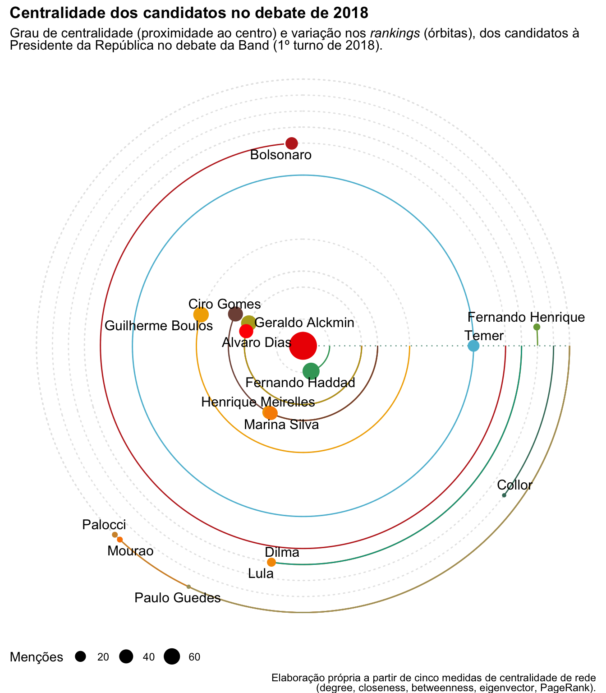
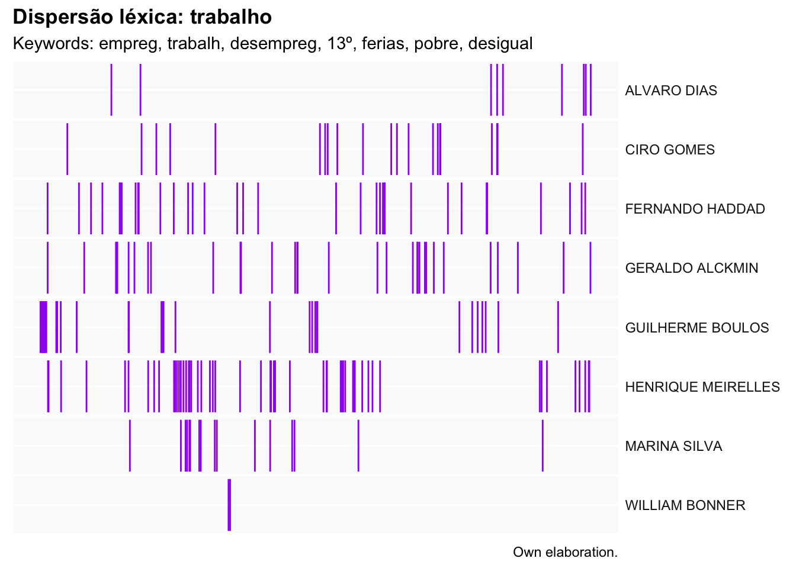
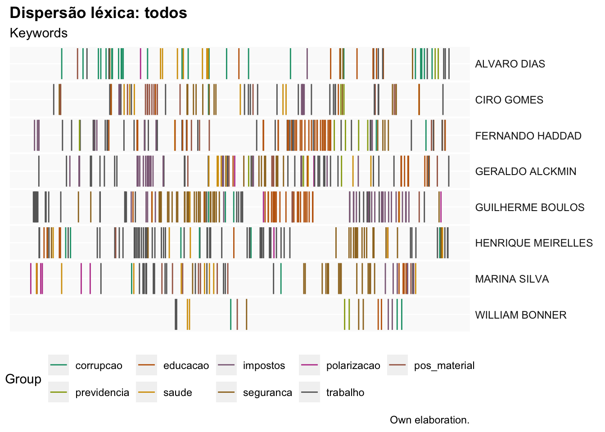

Será que, como na música que dizia “uma andorinha, voando sozinha, não faz verão”, só podemos aplicar técnicas de mineração de textos a grandes volumes de documentos? Ou, como num “samba de uma nota só”, é possível brincar entre e com as formas pelas quais examinamos um mesmo documento? As técnicas utilizadas no curso costumam ser aplicadas para um grande número de textos. Por exemplo, podem ser empregadas para entender perfis de política pública em todos os decretos presidenciais de um país. No entanto, quero demonstrar que o método pode ser aplicado inclusive para um texto só. Nossa fonte para demonstrar a idéia será a transcrição do debate da Band do primeiro turno das eleições presidenciais de 2018.
Aqui, e durante todo o curso, utilizaremos o Quarto como plataforma para fazer os comentários e executar o código do R, empregando comentários para contextualizar bem o que estaremos fazendo. Por exemplo, carreguemos os pacotes tenet, readr e abramos o debate do primeiro turno das eleições presidenciais de 2018 na Band:
Código
library(readr)library(stringi)library(quanteda)# Abre o arquivo preparado do debate# tx <- read_lines("https://raw.githubusercontent.com/rodrodr/araraquara/main/Data/BR_2018_1ROUND_PRES.txt")tx<-read_lines("../../Data/BR_2018_1ROUND_PRES.txt")# Vejamos as vinte e cinco primeiras linhastx[1:25]
[1] "TÍTULO: DEBATE NO PRIMEIRO TURNO DAS ELEIÇÕES DE 2018 ENTRE CANDIDATOS PARA PRESIDENTE DA REPÚBLICA NO BRASIL."
[2] ""
[3] ""
[4] "METADADOS:"
[5] ""
[6] "ELEICAO: 2018"
[7] "TURNO: 1"
[8] "MEDIO: TV"
[9] "REDE: REDE GLOBBO"
[10] "DATA: 2018-10-05"
[11] "PARTICIPANTES: "
[12] "{\"Ciro Gomes (PDT)\","
[13] "\"Marina Silva (REDE)\","
[14] "\"Geraldo Alckmin (PSDB)\","
[15] "\"Fernando Haddad (PT)\","
[16] "\"Álvaro Dias (PODE)\""
[17] "\"Guilherme Boulos (PSOL)\","
[18] "\"Henrique Meirelles (PMDB)\"}"
[19] "AUSENTES:"
[20] "{\"Jair Bolsonaro (PSL)\","
[21] "\"Cabo Daciolo (PATRI)\","
[22] "\"João Amoedo (NOVO)\","
[23] "\"Luis Ignacio Lula da Silva (PT)\"}"
[24] ""
[25] "DEBATE:"
Ao clicar em “código”, vemos as instruções no R e os resultados justamente debaixo. Esse marco de referência é muito útil, pois permite que comentemos o que estamos fazendo com detalhe e ir passo a passo. Podemos parar, dividir o código em partes mais simples e fáceis para “compreender a marcha e ir tocando em frente”.
Então, toquemos em frente… Convertamos o arquivo de texto em uma base de dados na qual cada fala corresponde a uma observação e classificamos as pessoas entre candidatos e moderador. O código abaixo realiza essa tarefa e permite que visualizemos o resultado:
Código
# Encontra as posições inicial e final de # cada fala de cada candidato ou do moderadorini<-which(stri_detect_regex(tx, "^([A-Z]\\s\\-)")==TRUE)fin<-c(ini[2:length(ini)]-1, length(tx))# Seleciona os candidatosna<-tx[ini]# Separa o tipo do nometp<-stri_split_fixed(na, pattern =" - ", n =2, simplify =T)[,1]nm<-stri_split_fixed(na, pattern =" - ", n =2, simplify =T)[,2]nm<-gsub(":","", nm)# Converte em base de dados d<-data.frame()# Para cada intervencaofor(iin1:length(ini)){# identifica: # a ordem# a pessoa que falou# o tipo (candidato, moderador ou jornalista)# o texto da falad<-rbind(d, data.frame( Ordem=i, Pessoa=nm[i], tipo=tp[i], Fala=tx[ini[i]:fin[i]]))}# Elimina linhas sem textod<-d[!d$Fala%in%na,]d<-d[d$Fala!="",]# Agrega todas as falas por# ordem, por tipo de pessoa (C-candidato ou# M - Moderador) e pessoad<-aggregate(list( Fala=d$Fala), by=list( Ordem=d$Ordem, tipo=d$tipo, Pessoa=d$Pessoa),paste0, collapse="\n")# Ordena os resultados pela# ordem de faltad<-d[order(d$Ordem),]# Visualizareactable::reactable(d, resizable =T, defaultPageSize =5, wrap =FALSE)
O que vemos na tabela acima? Exatamente a mesma informação que no texto original, com uma diferença: agora, o documento está estruturado de acordo com a ordem que aparecem os diálogos, o tipo de orador (Moderador ou Candidato), o nome de quem fala e o texto. A partir daqui podemos trabalhar com a informação de forma muito mais estruturada e aplicar diversas técnica para analizar o conteúdo e comparar os interlocutores. Podemos inclusive incluir mais variáveis de contexto como o partido de cada candidato, sua filiação ideológica, formação, entre outras informações que permitiriam desenvolver hipóteses ou testar outras formas de comparação.
Essa base de dados pode servir de ponto de partida para uma série de análises, assim como podemos continuar trabalhando sobre ela para gerar outras formas de dados, como uma rede, por exemplo. Para ello, hace falta utilizar recursos y técnicas de manipulación de textos como as expressões regulares.
Em um primeiro passo, extraímos todas as expressões iniciadas com maiúsculas dos textos. Assim, poderemos selecionar somente os nomes de outros políticos ou candidatos.
Código
# Elimina os acentos dos textos e dos# nomes dos candidatosd$texto<-stri_trans_general(d$Fala, "ascii")d$Pessoa<-stri_trans_general(d$Pessoa, "ascii")# Modifica nomes de políticos importantes para# que sejam visíveis depoisd$texto<-gsub("Michel Temer", "Micheltemer", d$texto, fixed =T)d$texto<-gsub("Fernando Henrique", "Fernandohenrique", d$texto, fixed =T)d$texto<-gsub("Paulo Guedes", "Pauloguedes", d$texto, fixed =T)d$texto<-gsub("Jair Bolsonaro", "Jairbolsonaro", d$texto, fixed =T)# Extrae todas as palavras começadas por # maiúsculas [A-Z] e seguindas por uma ou# mais letras minúsculas [a-z]+mt<-stri_extract_all_regex(d$texto,"([A-Z][a-z]+)", simplify =T)# Converte os dados em uma matrizmt<-data.frame(mt)# Adiciona a pessoamt$Pessoa<-d$Pessoa# Elimina ao moderador e os valores# sem informaçãomt<-mt[mt$Pessoa!="WILLIAM BONNER",]mt<-mt[!is.na(mt$X1),]# Converte o formato da base de dados# de horizontal (wide) a vertical (long)library(reshape2)mlt<-melt(mt, id="Pessoa")# Elimina as células vazias e a # variável "variable", que não# utilizaremosmlt<-mlt[mlt$value!="",]mlt$variable<-NULL# Vemos os resultadosreactable::reactable(mlt, filterable =T, sortable =T, resizable =T)
O próximo passo é uniformizar os nomes dos candidatos e outros políticos e, depois, filtrar os outros termos que não utilizaremos:
Código
# Lista de formas com as quais os candidatos# aparecem no textoa<-c("Alckmin","Alvaro","Jairbolsonaro","Boulos","Ciro","Fernando","Fernandohenrique","Geraldo","Gomes","Guedes","Guilherme","Haddad","Henrique","Marina","Meirelles","Micheltemer","Pauloguedes")# Lista com as formas uniformizadasb<-c("Geraldo Alckmin","Alvaro Dias","Bolsonaro","Guilherme Boulos","Ciro Gomes", "Fernando Haddad","Fernando Henrique","Geraldo Alckmin","Ciro Gomes","Paulo Guedes", "Guilherme Boulos", "Fernando Haddad","Henrique Meirelles","Marina Silva","Henrique Meirelles","Temer","Paulo Guedes")# Para cada nome, substitui com a # versão uniformizadafor(iin1:length(a)){mlt$value[mlt$value==a[i]]<-b[i]}# Como os nomes estão em maiúsculas# é necessário convertê-los em # capitalizadosmlt$Pessoa<-stri_trans_totitle(mlt$Pessoa)# Elimina as auto-referênciasmlt<-mlt[mlt$Pessoa!=mlt$value,]# Filtra para que inclua somente os candidatos# e outros políticosmlt<-mlt[mlt$value%in%c(b,c("Lula","Bolsonaro","Collor","Dilma","Mourao","Temer","Palocci")),]# Vemos os resultadosreactable::reactable(mlt, filterable =T, sortable =T, resizable =T)
Vemos que algumas díadas (vínculo entre dois nós ou pontos da rede, no caso os candidatos) aparecem repetidas várias vezes. Por isso, é útil contar quantas vezes se repetem para ter uma idéia da intensidade da relação entre os candidatos. Uma vez tenhamos esses dados, podemos criar um gráfico:
Código
# Conta o número de vezes ocorre# cada díadaag<-aggregate(list(value=mlt$value), by=list(from=mlt$Pessoa, to=mlt$value),length)# Cria um gráfico com a# redelibrary(tenet)plotChord(ag)
Agora damos um passo a mais. Utilizamos a metodologia da Análise de Redes Sociais para calcular a centralidade de rede de cada um dos candidatos. Utilizamos aqui cinco medidas: degree, que é o número de vínculos (no caso referências ou menções) que cada candidato possui com os outros; betweenness, que é o grau de intermediação/mediação na rede; closeness, maior proximidade a outros de acordo com estrutura de relações; eigenvector, ser amigo de pessoas influentes; e PageRank, que pessoas influentes te sigam. Para ilustrar a diferença entre essas duas medidas de centralidade podemos utilizar um exemplo das redes sociais. Se eu só sigo o Lula, o Bolsonaro e o Ciro terei um eigenvector alto e um PageRank nulo, mas se eles me seguem, eu terei os dois altíssimos.
A partir dos dados que organizamos acima, a função seguinte calcula essas cinco medidas de centralidade, converte a posição de cada candidato em um ranking e calcula a posição média e sua variação para criar o gráfico. Candidatos com posições mais altas na maioria dos rankings estarão situados mais perto do centro, enquanto que aqueles com valores mais baixos estarão na periferia. O tamanho de cada ponto dependerá do número de vezes que são mencionados e a extensão do arco que representa as órbitas é estabelecido pela variação. O candidato com a maior diferença entre rankings dará a volta completa e os outros serão comparados a ele.
Código
# Cria um gráfico de centralidade # de redeplotSolar(data =ag, title ="**Centralidade dos candidatos no debate de 2018**", subtitle ="Grau de centralidade (proximidade ao centro) e variação nos *rankings* (órbitas), dos candidatos à<br>Presidente da República no debate da Band (1º turno de 2018)." , caption ="Elaboração própria a partir de cinco medidas de centralidade de rede<br>(degree, closeness, betweenness, eigenvector, PageRank).", value.lab ="Menções")

Como podemos ver, Fernando Haddad foi o candidato mais destacado no debate, recebendo diversas menções nas falas dos outros e sendo requerido para responder as perguntas em um número maior de vezes. Possui também pouca variação no que se refere ao tipo de medida de centralidade calculado. Vemos também que existe um conjunto de órbitas próximas do centro que corresponde aos candidatos presentes no debate seguido de outro grupo, mais periférico correspondente a outros políticos e ao candidato que não compareceu ao debate: Jair Bolsonaro. Michel Temer foi o que mais variou entre as medidas de centralidade, por isso vemos a sua órbita completa no gráfico. Gravitam na periferia do gráfico Antonio Palocci, Paulo Guedes e Hamilton Mourão.
Esta análise só exemplifica o tipo de coisas que podemos fazer ao integrar a análise de texto dentro de uma mesma plataforma, no nosso caso o R, que permite a combinação de diversos métodos de análise. Não precisamos exportar os dados para outro pacote estatístico, como o SPSS ou o Stata, o de visualização de dados, como o Power BI ou o Tableau.
Até agora nossa jornada distanciou-nos do texto em direção à veredas mais abstratas. Sabemos que os candidatos fazem referência aos outros e também a políticos que não estão na disputa. No entanto, não sabemos o que eles dizem concretamente. Podemos averiguá-lo utilizando algumas técnicas de busca ou seleção de trechos, como o keywords in contexts ou kwic (soa como quick, rápido em inglês):
Código
# Criamos um corpus com os textoslibrary(quanteda)# Muda o nome da variável "texto" a # "text" para que o quanteda aceitenames(d)[5]<-"text"# Cria o corpuscx<-corpus(d)# Inclui o nome do candidato ou # moderador como identificador do# textodocnames(cx)<-paste0(d$Pessoa)# Procura os 20 termos anteriores# e posteriores da palavra # Bolsonarokw<-kwic(cx, "Bolsonaro", window=20)# Seleciona só as variáveis que# nos interessa ver:kw<-data.frame(kw)[,c("docname","pre","keyword","post")]# Vemos os resultadosreactable::reactable(kw, defaultPageSize =5, filterable =T, sortable =T, resizable =T)
Podemos voltar ainda mais ao texto ao criar um dicionário com alguns termos que desejamos buscar ou, inclusive, algumas expressões que uma leitura anterior dos documentos permitiu identificar como destacadas para entender as diferentes posições dos candidatos.
Abaixo aplicamos aos textos (do corpus cx que tínhamos criado) um dicionário com expressões relativas a algumas políticas como educação, saúde, corrupção, trabalho, previdência, segurança pública e temas considerados como “pós-materialistas” (gênero, meioambiente, racismo). Vejamos os resultados abaixo:
Código
# Criacao de um dicionariodic<-dictionary(list( educacao=c("educ","escola","ENEM","prof","ensin","ProUni","universi","formac","instituto"), saude=c("saude","sani","SUS","hospi","medic","enfermeir","clínic"), previdencia=c("previdencia","aposenta","pensões","pensionist", "INSS"), polarizacao=c("ódio","odia","polariza","extrem","conflito","ideol","medo"), trabalho=c("empreg","trabalh","desempreg","13º", "ferias","pobre", "desigual"), corrupcao=c("corrup","roub","assalt"), impostos=c("CPMF","IMPF","ICMS","imposto","taxa","tribut","fisca","ITR","IPVA","IPTU","IPI"), seguranca=c("seguranca","policia","assassin","trafic","estupr","droga","penal","militar","arma","violen","homicid"), pos_material=c("racis","mulher","feminis","genero","sexual","negro", "clima","desmat","incendi","gril","amazon","carbono","florest","ecolo","ambiente")))# Aplica o dicionário ao corpuslibrary(tenet)tagCorpus(cx, reshape.to ="sentences", defaultPageSize =5,dic, palette =pal$cat.brewer.Set1.9)
A tabela que aparece contém os dados de identificação de cada texto, o texto em sí enriquecido por etiquetas de diferentes cores de acordo com o código ou “tema” contido no dicionário. A coluna seguinte informa a principal categoria da unidade de texto que escolhemos (que pode ser tanto uma frase, um parágrafo, um documento inteiro ou qualquer outra unidade de agregação que desejemos). Por principal entendemos a mais frequente. Por essa mesma razão, nos casos de empate, mais de uma categoria é mostrada nessa coluna. A variável à direita contém todos os códigos encontrados nessa unidade textual. Consiste em um recurso muito útil para explorar as co-ocorrências entre temas e a sua associação. As duas últimas colunas representam o número total de palavras (matches) e de categorias (cat. no.) do dicionário encontradas.
Este recurso nos permite voltar ao texto, mas agora enriquecido com a ajuda de técnicas semi-automatizadas. É possivel ordenar os resultados, filtrar por um candidato ou categoria, até mesmo selecionar a combinação entre uma categoria principal e outra secundária. Por exemplo, podemos ver que somente Ciro Gomes combinou as categorias segurança com temas considerados pós-materialistas, ainda que a ênfase fosse depositada sobre a violência sobre a garantia de direitos. Marina e Boulos, por outro lado, foram os únicos a defender uma articulação entre impostos e educação. No caso dela, para garantir uma base fiscal. No caso do candidato do PSOL, para realizar uma crítica à gestão de Geraldo Alckmin no governo do estado de São Paulo.
Outra possibilidade se abre para localizar os pontos do texto nos quais as palavras que formam um ou mais códigos aparecem. Estão uniformemente distribuidas por toda sua extensão ou se concentram em trechos concretos ou temáticos do discurso? O gráfico de dispersão léxica representa a forma idônea para realizar tal tarefa. Está formado por um conjunto de barras (horizontais ou verticais) que simbolizam toda a extensão do texto que estão pintadas por barras ou pontos que indicam onde as palavras ou códigos estão localizadas. Os dos próximos gráficos indicam as posições de categorias do dicionário que criamos acima. O primeiro se restringe ao código “trabalho”, enquanto que o segundo situa todos os temas. Devemos sempre ter cuidado com o número de categorias que queremos representar, pois um gráfico com cores demais deixa de ser compreensível para o leitor.
Código
# Agrega as falas por candidatoda<-aggregate(list(texto=d$Fala), by=list(Pessoa=d$Pessoa), paste0, collapse="\n")# Cria um novo corpus a partir desses# dados agregados names(da)[1:2]<-c("doc_id", "text")ca<-corpus(da)# Gera um gráfico de dispersão léxicaplotLexDiv(ca, title ="**Dispersão léxica: trabalho**", keywords =dic$trabalho, palette =pal$cat.brewer.Dark2.8[1:3], custom.color =c("purple"))

Código
# Gera um gráfico de dispersão léxica# agora para todas as categorias do# dicionarioplotLexDiv(ca, title ="**Dispersão léxica: todos**", legend.rows =2, keywords =dic, palette =pal$cat.brewer.Dark2.8)

Análise temática
Ainda estamos longe deesgotar as possibilidades de análise do texto. Agora, passamos a contar o peso que cada tema do dicionário criado anteriormente possui no corpus. Qual é o tema com maior incidência? Qual o menos popular entre os candidatos? O gráfico abaixo representa um treemap de Voronoi. Basicamente, gera uma divisão das áreas pertencentes a cada código (identificados com diferentes cores) e suas palavras-chave, cuja área indica o seu peso relativo dentro da categoria (e de todo o universo de palavras associadas a um código que foram encontradas no corpus).
Código
### Análise de temasdocvars(ca,"Pessoa")<-docid(ca)kw<-countKeywords(ca, dic, quietly =TRUE)ag<-aggregate(list(value=kw$frequency), by=list(group=kw$level1, elements=kw$keyword),sum, na.rm=TRUE)ag<-ag[ag$value>0,]plotVoronoiTree(ag, groups ="group", elements ="elements", value="value", elementId ="VoroTemaCand")
Vemos que o tema “trabalho” aparece como o mais importante (como seria esperado em qualquer debate eleitoral). Outros também se destacam, como aaa educação (um clássico entre as promessas eleitorais) e os impostos (tão odiado como importante para o funcionamento do Estado). Surpreende que o tema da corrupção, determinante para a vitória de Bolsonaro e para a exclusão de Lula da lista de candidatos, ocupe uma posição de pouco destaque. Esse fenômeno talvez faça eco de estudos da ciência política que defendem a tese de que este tema possui pouca capacidade de mobilização de votos (seria como a constante no sistema, para utilizar uma metáfora matemática).
Também podemos ver como cada código aparece na fala de cada um dos candidatos. Existem várias maneiras distintas de visualizar esse dado, mas aqui propomos duas. A primeira representa cada candidato como uma estrela que atrae códigos que simulam a posição de satélites. O tamanho de um círculo é determinado pela soma das frequências do conjunto de palavras que aparecem em cada código encontrado em sua fala.
Código
# temas por candidatokw<-countKeywords(ca,dic, group.var ="Pessoa", quietly =TRUE)kw<-kw[kw$frequency>0,]js<-jsonTree(kw, groups =c("groups","level1"), elements ="keyword", value ="frequency")forceDirectedTree(js, max.radius =10,show.link =F, attraction =-5, palette =pal$cat.brewer.Dark2.8, elementId ="forceTemaCand")
Fica claro que Guilherme Boulos é o candidato que mencionou o maior número de pontos ou temas do nosso dicionário provisório, lúdico e festivo. No entanto, de modo distintos de outros concorrentes, não se observa uma concentração ou preferência temática clara. Inevitavelmente os assuntos relacionados ao trabalho possuem maior destaque, mas não se descolam muito de outras categorias empíricas como a educação, a segurança pública ou os impostos. Temos em Henrique Meirelles o exemplo oposto. Do total de 78 referências encontradas em suas intervenções no debate, 53 (aproximadamente 68%) versam sobre o emprego. Álvaro Dias, por sua vez, decidiu especializar-se no tema corrupção e em um ataque frontal ao PT, representado no debate pelo candidato Fernando Haddad.
Outra forma de visualizar consiste em colocar os temas e os candidatos frente a frente. De um lado, uma serie de barras com o nome dos competidores. De outro, os temas, cada um representado por uma cor. Ao passar o cursor seja sobre o nome de um debatedor ou de um código, podemos ver como está dividido ou o peso relativo de cada elemento que compõe a coluna oposta em sua proporção.
Código
ag<-aggregate(list(value=kw$frequency), by=list(groups=kw$groups, level1=kw$level1),sum)plotSankey(ag, from ="groups", to ="level1", value ="value")
Ao colocar a atenção sobre Álvaro Dias, podemos constatar que mais da metade dos termos encontrados caem na categoria corrupção. Além disso, trata-se de um fenômeno recíproco, ou seja, este candidato é responsável pela maioria das referências à corrupção durante todo o debate. Fernando Haddad divide-se entre educação (foi Ministro da Educação durante o governo Lula) e trabalho. Como já mencionnamos, Boulos apresenta um bom equilíbrio entre temas y Henrique Meirelles se especializa no tema do emprego, algo absolutamente coherente com o ideário liberal defendido pelo candidato durante sua campanha.
Finalmente, podemos centrar a nossa atenção nos vínculos existentes entre os diferentes códigos. Quais são os que aparecem juntos com muita frequência? Quais os que nunca estão associados? Este é outro olhar, muito fecundo, de examinar os temas presentes em um corpus.
O gráfico abaixo, um diagrama de cordas, corresponde a um tipo de visualização de dados excelente para redes muito densas, nas quais todos os pontos encontram-se vinculados entre sí, mas com distinta intensidade.
Código
cas<-corpus_reshape(ca, to ="paragraphs")cd<-matchCodes(cas, dic, level=1, quietly =TRUE)plotChord(cd, from ="term1", to ="term2", elementId ="ChordTerms")
Trabalho-educação, trabalho-impostos e educação-impostos são as três díadas que formam o núcleo discursivo do debate. Vemos que não só são os temas mais citados, mas também os que guardam mais interrelação. De um modo ou de outro, as categorias restantes se conectam com algum dos três como idéias auxiliares ou ancilares.
Classificação
Finalmente, antes de que saiamos a entoar a “moda da pinga” em algum boteco por aí, devemos considerar as possibilidades de classificação de textos de forma automática ou semi-automática. Por exemplo, depois de tudo o que vimos até agora, quais candidatos possuem as falas mais parecidas entre si? Ou, como poderíamos descobrir temas latentes no corpus que escaparam nossa primeira inspeção? Deste ponto em adiante, examinaremos algumas técnicas de classificação automatizada que podem ser úteis seja para facilitar o trabalho de construção de dicionários ou mesmo de análise, seja para confirmar ou reforçar os achados que realizamos até agora.
A análise de cluster, por exemplo, permite que classifiquemos palavras ou textos segundo sua proximidade. O gráfico abaixo representa uma versão interativa de um dendrograma. Trata-se de um diagrama em forma de árvore que separa as “folhas” e “galhos” segundo a distância entre eles. Folhas que só se conectam depois de passar por muitos galhos são mais diferentes que aquelas que se localizam uma do lado da outra.
Código
# Análise de clusterforceClusTree(ca, palette =pal$cat.brewer.Paired.12[1:8], lang ="pt", maxRadius =10)
Como podemos ver, a “folha” mais distante está representada por William Bonner, o moderador do debate. Logo, em cada “galho”, vemos Henrique Meirelles, Álvaro Dias e Geraldo Alckmin, todos políticos situados no centro-direita do espectro ideológico brasileiro. Finalmente, dividem um mesmo galho, por um lado, Ciro Gomes e Marina Silva e, por outro, Fernando Haddad e Guilherme Boulos. Qualquer pessoa que conheça um pouco da política brasileira reconhece que se trata de uma divisão crível e que representa muito bem similaridades políticas entre os candidatos, assim como marca a distância ideológica e programática entre eles (mesmo quando o Alckmin atualmente seja vice do Lula e o Haddad o Ministro da Economia).
Como dissemos antes, também podemos utilizar métodos de classificação para identificar tópicos ou códigos no texto. Reinert (1983) criou um algoritmo que divide as palavras de um corpus entre k grupos segundo a menor distância possível. Funciona de forma similar a uma análise de cluster hierárquico, mas agora para agrupar palavras. O gráfico abaixo mostra os resultados do algoritmo para 10 grupos:
Os cinco primeiros grupos parecem estar formados pelas intervenções iniciais que estabelecem os turnos e a quem se fará as perguntas. Pouco aparece sobre conteúdo de políticas. O sexto cluster está concentrado nas contas públicas e nos impostos. O sétimo no trabalho e na honestidade dos candidatos. O oitavo congrega tanto a educação como o diagnóstico e as acusações de corrupção. A nona categoria reune o tema da polarização política e a décima trata da segurança pública e infraestructuras.
Finalmente, a análise de componentes principais (PCA em inglês) representa uma técnica de redução de dimensões. Imaginemos que cada texto é uma dimensão, formada por palavras que estão presentes e ausentes. O algoritmo tenta representar a variedade das combinações possíveis no menor número de dimensões possíveis. Seria como encontrar variáveis “latentes” ou ocultas nos dados que os sintetizassem. O resultado são variáveis numéricas (chamadas componentes) que resumem certo porcentagem da variação total. No caso do exemplo abaixo, a primeira dimensão condensaria 10,8% e a segunda 3,6%. Ao inclui-las em um gráfico de dispersão, podemos ver como as distintas palavras se posicionam de forma diferenciada dentro desse espaço.
Código
dc<-d[d$Pessoa!="WILLIAM BONNER",]cc<-corpus(dc)docnames(cc)<-dc$PessoapcaScatter(cc, lang ="pt", n.clusters =5, palette=pal$cat.brewer.Dark2.8[1:5], title ="Debate na Band", min.freq =5)
Referências
Reinert, Max. 1983. “Une Méthode de Classification Descendante Hiérarchique : Application à l’analyse Lexicale Par Contexte”. Les Cahiers de l’analyse Des Données 8 (2): 187–98. http://www.numdam.org/item/?id=CAD_1983__8_2_187_0.